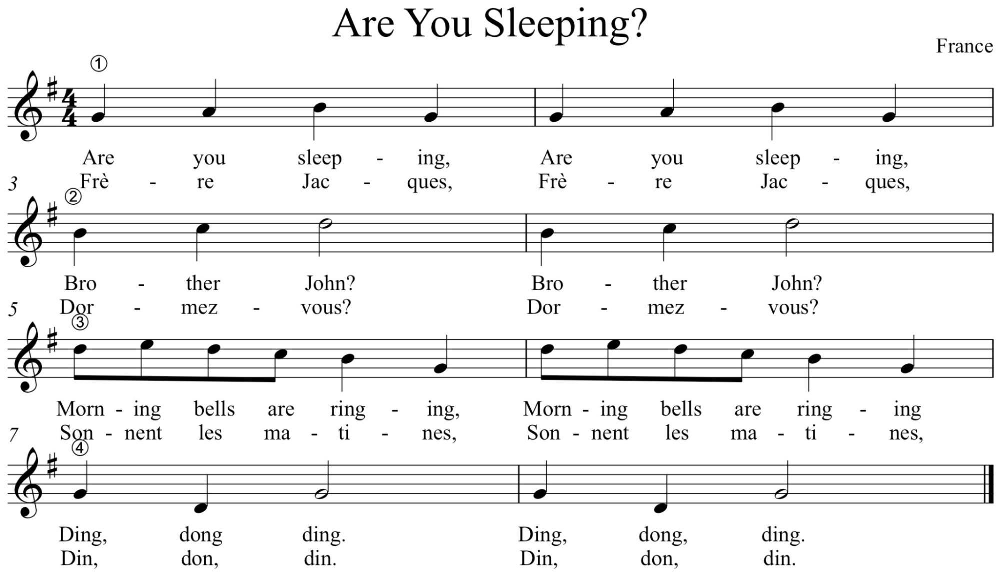

Engaging Students: Essays in Music Pedagogy
From Distress to Success: Collaborative Learning in Music Theory Assessments
Deborah Rifkin, Ithaca College
Appendix 1
A Sample Group Assessment with Collaborative Learning. This assignment was used in a class called "Music Phrases Through the Ages," a first-year seminar for non-music majors.
For each activity below, each student should be both a performer and a listener. When you have finished all activities, fill out the online form on Sakai for Practicum #2.
Activity 1: Rhythmic Accompaniment and Rounds
Listeners:
- Sing the tune “Are You Sleeping” (see below). As you sing, the performer will improvise a clapped accompaniment. This tune is also known by its French title, “Frère Jacques.” You can sing in either English or French.
Performer:
- As the other two members of your group sing “Are You Sleeping,” clap an improvised rhythmic accompaniment. Think about the give-and-take of parts. In other words, as the melody is active, consider a less active accompaniment, and when the melody is static, increase your rhythmic activity.
- This balance between melody and accompaniment is an important feature of musical texture.

Together:
- Discuss the texture created by the performer’s improvisation. What did you like? What didn’t you like? Why?
- This tune can also be performed in a round! The round parts are numbered 1–4 above. The first person starts the tune. Just as the first person is about to sing “Brother John”, the second person starts the song. Just as the second person is about to sing “Brother John,” the third person starts the song. Another way to think about this: the second person starts singing after the first person has sung 2 measures, and the third person starts to sing after the first person has sung 4 measures.
- If you can’t keep the round together, try simplifying the task to only rhythms. Clap the rhythms of the song in round.
- What do you notice about how the parts interact? Do they all move at the same time? Are some parts slower/faster than others?
Activity 2: More Phrase Phun.
Everyone together:
- Listen to the first phrase of Mozart’s theme from his Flute Quartet, K. 298, mvt. 1. A recording of the first phrase is available on Sakai.
- Sing along with the first phrase multiple times, until you feel as if you have memorized it. Conduct along with the recording as you sing.
- Next, without the recording, sing the first phrase.
- As a group, analyze the melody: What meter is it in? How many measures are there? Does it end on an open or closed cadence?
Listener:
- When both listeners feel confident, sing the first phrase of Mozart’s tune.
Performer:
- After the listeners have completed their phrase, improvise a PARALLEL CONSEQUENT phrase that completes the period. As we discussed in class, the parallel consequent phrase will start off the same but will end differently. The ending will change to accommodate a closed cadence; your melody should end on 1 (do.)
Together:
- Discuss the performer’s improvised consequent phrase. Did it result in a parallel period? What was similar to the antecedent? What was different? What other options could there have been?

This work is copyright 2013 Deborah Rifkin and licensed under a Creative Commons Attribution-ShareAlike 3.0 Unported License.